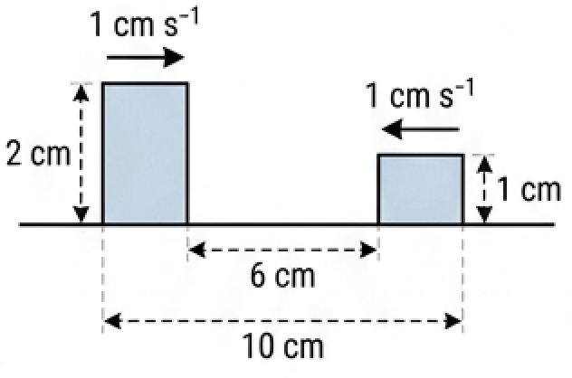
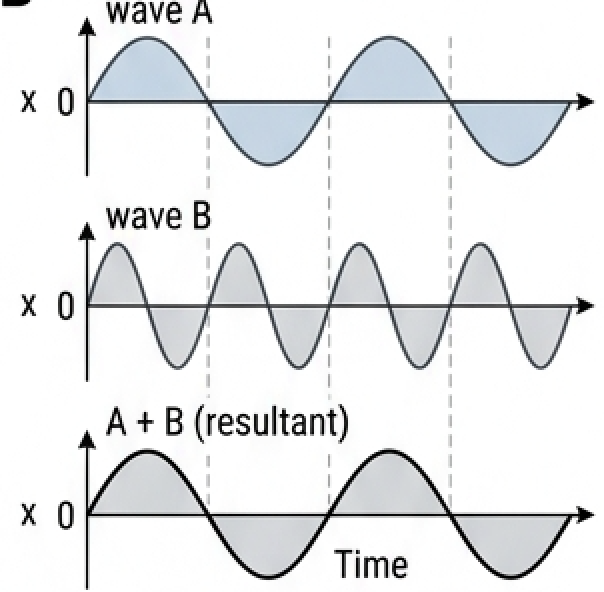
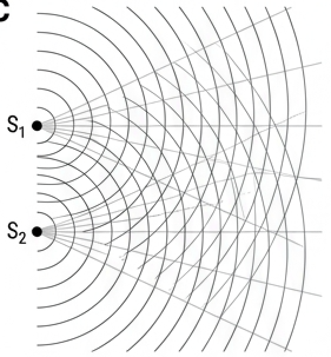
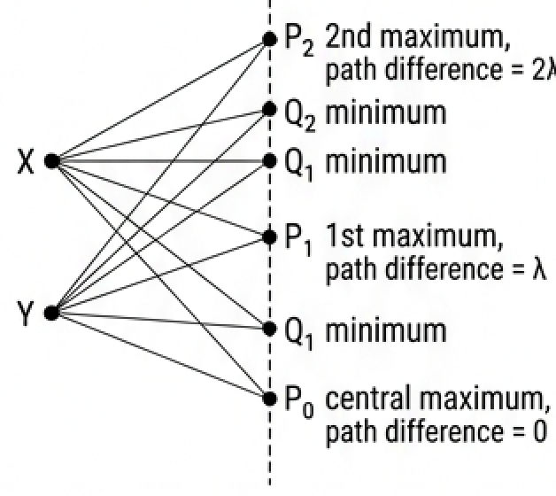
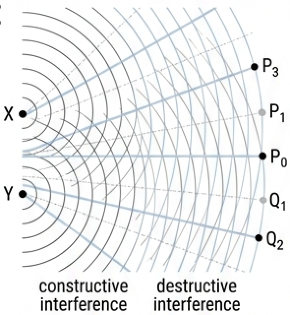
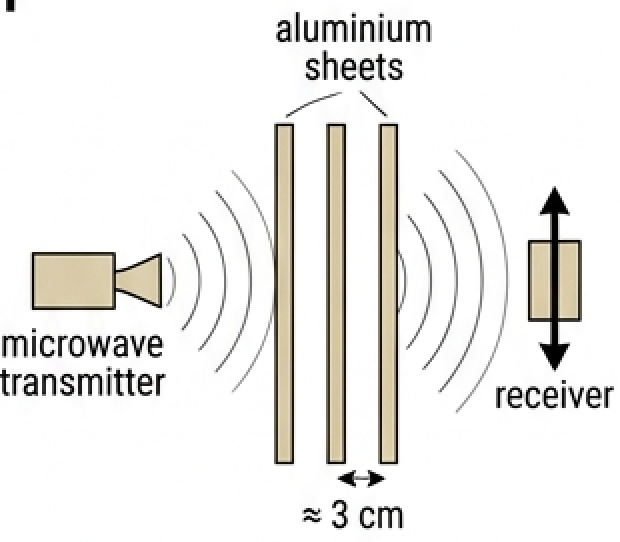
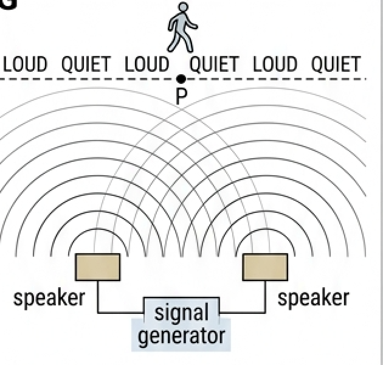
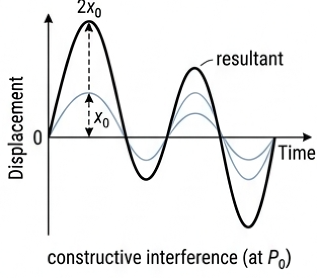
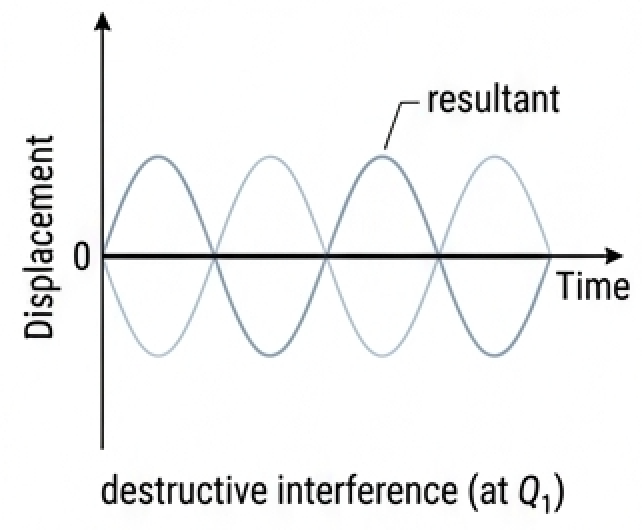
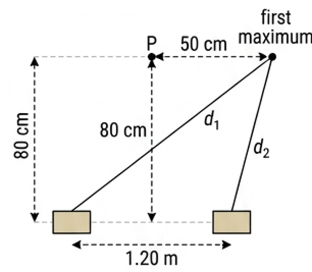

🎯 Hook – two pulses on a collision course
Two idealized square pulses travel towards each other along a stretched spring, each at \(1\ \text{cm s}^{-1}\). The left pulse is \(2\ \text{cm}\) tall, the right one \(1\ \text{cm}\) tall, and they start \(6\ \text{cm}\) apart on a \(10\ \text{cm}\) span. While they overlap, the spring shows a shape neither pulse has on its own. Then both pulses emerge and carry on exactly as before. Waves pass through each other; they do not collide.

📐 The principle of superposition
When waves pass through each other at a point, we add their displacements to determine the overall result at that place at that moment. This is called the superposition of waves.
The principle of superposition of waves: the overall displacement is the vector sum of the individual wave displacements. Equivalently: the resultant of two or more waves arriving at the same point can be determined by the vector addition of their individual displacements.
Because it is a vector sum, a positive displacement added to a negative displacement of the same size gives zero at that instant.
When similar waves pass through each other they will usually have a wide range of different frequencies and amplitudes. Under these circumstances superposition effects are negligible. But when waves have similar frequencies and amplitudes, the effect can be significant.

🌊 Interference and coherence
When the superposition of wavefronts produces a constant two- or three-dimensional pattern we describe it as an interference pattern (the bright and dark, or loud and quiet, regions are called fringes). Most commonly, this effect occurs between two sources of waves which have the same single frequency and the same wave shape. Such sources, and the waves they produce, are described as being coherent: they have the same frequency and a constant phase difference.
Interference is a superposition effect that may be produced when similar waves meet. It is most important for waves of the same frequency and similar amplitude.

➕ Constructive interference and path difference
To explain an interference pattern we consider the path difference between the waves arriving at various points from the two sources — the difference in the distances from a particular point to the two sources. In Fig 4 the straight lines represent distances, not rays.
If the waves are emitted in phase from points X and Y, and both waves travel the same distance at the same speed to any point such as \(P_0\), the waves will always be in phase at that position. Using the principle of superposition, the resulting wave has double the amplitude of the original waves. This is called constructive interference.
The path difference for the waves arriving at \(P_0\), or any other point which is the same distance from X and Y, is zero. Constructive interference will also occur at any place where the waves always arrive in phase, which occurs where the path difference is \(1\lambda\), or \(2\lambda\), or \(3\lambda\) … or \(n\lambda\) (where \(n\) is a whole number), as shown by \(P_1\) and \(P_2\).

➖ Destructive interference
Destructive interference occurs at all points where the waves arriving from one source have travelled \(\tfrac{1}{2}\lambda\), or \(\tfrac{3}{2}\lambda\), or \(\tfrac{5}{2}\lambda\), or \(\left(n+\tfrac{1}{2}\right)\lambda\) more than the waves from the other source, as shown by the points \(Q_1\) and \(Q_2\) in Fig 4.
These conditions assume the usual situation: the waves are emitted in phase with each other. If the waves were exactly out of phase, these conditions would be reversed.
Constructive interference and destructive interference describe the extreme possibilities of wave superposition. At other locations the amount of interference varies between these extremes.
Two sets of waves, each of amplitude \(x_0\), result in a wave of amplitude \(2x_0\). Since wave intensity is proportional to amplitude squared, at places of constructive interference the intensity has quadrupled. This is possible because the intensity at places of destructive interference has been reduced.

🔧 Demonstrating interference: microwaves and sound
In theory, all types of waves can produce interference patterns. However, it may be impossible, or very difficult, to produce two coherent sources for some types of wave, because the waves are emitted in uncontrolled, random processes. This means that interference will not usually be observed with naturally produced waves. That is why the interference of light is not a common phenomenon: separate light sources are not coherent, and light has very small wavelengths, so any interference pattern will be very small and difficult to observe.
Microwaves. Waves from this section of the electromagnetic spectrum are easily produced by electronic circuits and can have a wavelength of a few centimetres, which is ideal for demonstrations. The two gaps between the aluminium sheets each have a width of about one wavelength (\(\approx 3\ \text{cm}\)). They have the same effect as the double slits in Young's experiment: two diffracted, coherent waves emerge from the other side and then interfere. When the microwave detector is moved from side to side, constructive and destructive interference will be detected.
Sound. A signal generator — electronic equipment used to supply small alternating currents of a wide range of different frequencies — provides an oscillating electric current to two loudspeakers, which then produce coherent longitudinal sound waves of the same frequency. As a listener walks past the speakers, the sound intensity rises and falls, because of constructive and destructive interference.


📈 Graphs every examiner uses
| Graph type | Axes (X, Y) | Shape | What to read |
|---|---|---|---|
| Superposition of two waves | Time (s), displacement (m) | Three stacked traces: wave A, wave B, resultant A + B | Add the two upper traces instant by instant; zeros of the resultant occur where displacements are equal and opposite |
| Constructive interference | Time (s), displacement (m) | Resultant in phase with both waves, amplitude \(2x_0\) | Amplitude doubles, so intensity quadruples |
| Destructive interference | Time (s), displacement (m) | Two waves antiphase; resultant a flat line (or small residual) | Resultant amplitude \(|A_1 - A_2|\); zero only for equal amplitudes |
| Intensity across the pattern | Position across screen (m), intensity (W m⁻²) | Evenly spaced maxima with minima between them | Maxima where path difference \(= n\lambda\), minima where \(= (n+\tfrac{1}{2})\lambda\) |


✍️ Worked example – two loudspeakers, one wavelength
Perpendicular distance \(= 0.80\ \text{m}\), sideways shift \(= 0.50\ \text{m}\).
\(d_1 = \sqrt{0.10^2 + 0.80^2}\)
\(= 0.806\ \text{m}\)
\(d_2 = \sqrt{1.10^2 + 0.80^2}\)
\(= 1.360\ \text{m}\)
path difference \(= 1.360 - 0.806\)
\(= 0.55\ \text{m}\)

🍽️ Real-world: hot and cold spots in a microwave oven
The waves used to cook food in a microwave oven reflect repeatedly off the metal walls and can produce interference effects, so some parts of the food sit at maxima and cook quickly while others sit near minima and stay cold. That is why ovens use a turntable and a rotating stirrer to move the food through the pattern.
🚀 HL Extension – theories, and what counts as an explanation
Depending on context, the addition of waveforms is variously described as superposition, interference or Fourier synthesis. The nature of light was debated for centuries, with competing theories each explaining part of the evidence — captured in W. H. Bragg's remark that physicists use the wave theory on Mondays, Wednesdays and Fridays and the particle theory on Tuesdays, Thursdays and Saturdays. The photon theory (Theme E) returns in part to a 'particle' explanation.
Challenge: two microwave gaps give a maximum where the receiver is \(57\ \text{cm}\) from one gap and \(45\ \text{cm}\) from the other. Show that both \(3\ \text{cm}\) and \(4\ \text{cm}\) are possible wavelengths. (Answer: path difference \(= 12\ \text{cm}\); \(12/3 = 4\lambda\) and \(12/4 = 3\lambda\), both whole numbers of wavelengths.)
⚠️ Trap corner – common mistakes
| Misconception | Correct view |
|---|---|
| Waves destroy each other when they meet | Displacements add for as long as the waves overlap; each wave then continues unchanged |
| Constructive interference needs zero path difference | Any whole number of wavelengths works: \(0, \lambda, 2\lambda, 3\lambda \ldots n\lambda\) |
| Destructive interference means the energy vanishes | Intensity is redistributed: it quadruples at the maxima because it is reduced at the minima |
| Two lamps of the same colour will make fringes | Separate light sources are not coherent; you need one wavefront split by two slits |
| \(s = \lambda D / d\) applies to any two-source interference | It relies on the geometry of the light experiment; it is not accurate for the microwave or sound demonstrations |
| Any two overlapping waves give a strong effect | With a wide range of frequencies and amplitudes, superposition effects are negligible |
Complete the statements:
✓ (b) Sine curve on the same axes, peak \(+2.0\ \text{cm}\), period \(0.25\ \text{s}\), so three complete cycles in \(0.75\ \text{s}\).
✓ (c) Resultant obtained by adding the two ordinates at each instant.
✓ Resultant is not sinusoidal; it repeats with the period of the lower frequency, \(0.50\ \text{s}\).
✓ Maximum resultant displacement \(6.0\ \text{cm}\) where both curves peak together; resultant zero wherever the two displacements are equal and opposite.
✓ (b) \(7.0\ \text{s}\): the pulses partly overlap; in the overlap region the displacement is \(2 + 1 = 3\ \text{cm}\), with \(2\ \text{cm}\) and \(1\ \text{cm}\) steps either side.
✓ (c) \(8.5\ \text{s}\): the overlap is complete over the shorter pulse's width, giving a \(3\ \text{cm}\) block where both pulses coincide.
✓ (d) \(12.0\ \text{s}\): the pulses have separated, each unchanged in height, width and direction — a \(2\ \text{cm}\) pulse travelling right and a \(1\ \text{cm}\) pulse travelling left.
✓ Amplitude \(2A\) — double that of either wave (constructive interference).
✓ (b) A straight line along the time axis.
✓ Resultant amplitude zero, because equal and opposite displacements add to zero at every instant (destructive interference).
✓ Multiply each by 4, because the figure is one-quarter of real size.
✓ Path difference \(= S_2\text{P} - S_1\text{P}\) (real values); divide by \(\lambda = 2.5\ \text{cm}\).
✓ Whole number of wavelengths → constructive interference; a whole number plus a half → destructive; anything between → partial interference.
✓ Constructive interference requires path difference \(= n\lambda\); \(12/3 = 4\) and \(12/4 = 3\), both whole numbers, so \(n = 4\) with \(\lambda = 3\ \text{cm}\) and \(n = 3\) with \(\lambda = 4\ \text{cm}\) both satisfy the condition.
✓ (b) Count the maxima: move the receiver from the central maximum out to this position and note how many maxima are passed, which fixes \(n\).
✓ Alternatively use the known frequency of the transmitter with \(\lambda = c/f\).
✓ Or check whether the calculated \(\lambda\) matches the slit width, which is about one wavelength.
✓ (b) \(d_1 = \sqrt{0.10^2 + 0.80^2} = 0.806\ \text{m}\)
✓ \(d_2 = \sqrt{1.10^2 + 0.80^2} = 1.360\ \text{m}\)
✓ Path difference \(= 0.55\ \text{m}\); this is the first maximum away from the centre, so \(\lambda \approx 0.55\ \text{m}\).
✓ (c)(i) Higher frequency → shorter wavelength → the loud and quiet positions are closer together.
✓ (c)(ii) The speakers become antiphase, so the conditions reverse.
✓ P becomes a quiet point and the former quiet positions become loud.
✓ Walking towards one speaker introduces a path difference; as it approaches \(\tfrac{1}{2}\lambda\) the interference becomes destructive and the level falls.
✓ (b) Every point on that perpendicular line is equidistant from the two speakers, so the path difference stays zero and the sound stays loud.
✓ (c) \(\lambda = v/f = 342/180 = 1.90\ \text{m}\).
✓ Moving a distance \(x\) towards one speaker changes the path difference by \(2x\).
✓ Next maximum when \(2x = \lambda\), so \(x = 0.95\ \text{m}\).
✓ (d) In a room, reflections from walls, floor and ceiling would add further waves.
✓ These extra superpositions would blur or shift the pattern, so the maxima and minima would not be clear.
✓ Light has very small wavelengths, so any interference pattern is very small and difficult to observe.
✓ (b) Superposition of the reflected waves creates fixed maxima and minima inside the oven.
✓ Food at a maximum is heated strongly while food at a minimum is barely heated, giving hot and cold spots / uneven cooking.
✓ A turntable (or a rotating stirrer that moves the pattern) keeps moving the food between maxima and minima so the heating averages out.